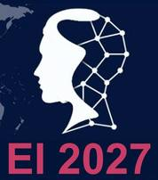

イベント・ニュース
研究室の活動、学会・ワークショップ、メディア掲載情報を紹介します。過去の募集情報はアーカイブとして掲載しています。
イベント名や記事見出しは日本語で紹介しています。リンク先には英語の資料が含まれます。
お知らせ
今後のイベント
- ～：

Embodied Intelligence国際会議2027 — オンライン開催。プログラムと参加登録の詳細は、学会ウェブサイトをご覧ください。
過去のイベント
2026
- 2026年3月18～20日：EI’26 国際オンライン会議（Embodied Intelligence）.
- 2026年1月1日：
 『世界最高峰の学び』（日経BP）刊行
『世界最高峰の学び』（日経BP）刊行
2025
- 2025年12月8日：『ドラえもん科学ワールド』ロボット関連書籍（小学館、日本語）刊行
- 2025年10月1日：東京大学にBio-Inspired Robotics Laboratoryの新拠点を開設
- 2025年4月2～4日：EI’25 国際オンライン会議（身体性知能）.
- 2025年2月18日：身体性知能ワークショップ（終日）、ケンブリッジ大学ニューナム・カレッジ
2024
- 2024年11月19日：Future Intelligence講演、16時。Zoomで参加
- 2024年5月13～17日：BIRLメンバーが参加：ICRA’24国際会議（横浜、日本）
- 2024年3月25～27日：FOODLYプロジェクト @ IFE Manufacturing 2024展示会
- 2024年3月20～22日：EI’24：身体性知能に関する国際オンライン会議
- 2024年3月6日：身体性人工知能と進化的ソフトロボティクスのワークショップ（満席）
2023
- 2023年11月8日：FOODLYプロジェクト @ REAP’23会議
- 2023年10月26日：水中での動物・ロボットの移動に関するケンブリッジ・ワークショップ
- 2023年9月13～15日：TAROS’23・Agriforwards CDT・ロボティクスCDT合同会議
- 2023年4月3日：RoboSoft 2023 身体性知能とソフトロボティクスのワークショップ
- 2023年3月22～24日：EI-2023：身体性知能に関する国際オンライン会議。当時の無料参加登録はこちら.
- 2023年2月21～22日：「知能を理解する」ワークショップ（招待制）
2022
- 2022年12月8～9日：EPSRC 複合現実のためのソフトロボティクス交流ワークショップ
- 2022年4月4日：RoboSoft 2022 身体性知能ワークショップ
- 2022年1月28日：プレスリリース：浮遊物体の遠隔制御
- 2022年3月21日：ポスドク募集（過去の情報）：生物に学ぶソフトロボティクス
2021
- 2021年11月5日：工学部大学院オープンデー
- 2021年10月16日：Agriforwards CDT 新入生歓迎イベント
- 2021年9月24日：OHMC 2 PPFイベント
- 2021年7月1～2日：EPSRC Agriforwards CDT年次会議 「農業・食品産業のためのコンピュータービジョン研究とイノベーション」
- 2021年6月28～30日：EPSRC Agriforwards CDT・IEEE RASサマースクール
- 2021年3月24～26日：次世代身体性知能に関する国際ワークショップ
2020
- 2020年6月5日：BIRL設立10周年 オンライン同窓会議
- 2020年6月：BT Applied Research・Tommy Flowers Network講演イベント：農業・食品ロボット革命
- 2020: IROS 2020ワークショップ：プライマリケアのためのロボット支援訓練 — ロボットは医師の診察訓練をどう支援できるか
- HRI2020 人とロボットの医療インタラクション・ワークショップ（2020年3月23日）
- 農業・食品ロボティクス博士課程教育センター 第1回年次会議（2020年3月19～20日）
2018
- 2018年4月24～27日：IEEEソフトロボティクス国際会議（RoboSoft 2018）、リヴォルノ、イタリア
2016
- 2016年7月14～15日：JSPS–EPSRC 日英・生物に学ぶソフトロボティクスワークショップ、ケンブリッジ、英国
2014
- 2014年12月11～12日：生物の原理に基づくロボティクスの未来に関する国際ワークショップ、ケンブリッジ、英国
2013
- 2013年7月：CSFソフトロボティクス国際ワークショップ、モンテ・ヴェリタ、スイス
2010
- 2010年6月20～23日：SNF–JSPS 日瑞合同セミナー「ソフトロボティクス：形態・材料・機能」、東京大学
講演・学会のウェブサイト
Future Intelligence講演シリーズ · 身体性知能国際会議
ニュースアーカイブ
過去のお知らせを掲載しています。募集情報には終了したものが含まれます。
2021
2021年9月24日 ：OHMC 2 PPFイベント
2021年10月16日：Agriforwards CDT 新入生歓迎イベント
2021年11月5日：工学部大学院オープンデー
2021年7月1～2日 ：EPSRC Agriforwards CDT年次会議 「農業・食品産業のためのコンピュータービジョン研究とイノベーション」
2021年7月1～2日 ：EPSRC Agriforwards CDT年次会議 「農業・食品産業のためのコンピュータービジョン研究とイノベーション」
2021年6月28～30日：EPSRC Agriforwards CDT・IEEE RASサマースクール
2021年3月24～26日 – 身体性知能 国際ワークショップ：プログラム研究者インタビュー と発表動画.
2021年2月23日：飯田史也のソフトロボティクス研究に関するインタビュー（IEEE RAS技術委員会ウェブサイト） 音声を聴く
2021年2月16日：ケンブリッジ大学が「農業の未来」を支えるデジタルツインを発表。詳しく読む
2020
2020年12月1日 東京大学・ケンブリッジ大学 Voicesシンポジウム：情報・ロボティクス技術
2020年11月26日 ソフトロボティクス分野のポスドク募集（過去の情報）
2020年6月5日 BIRLオンライン同窓会議
2020年6月1日 プレスリリース：オムレツ作りを学ぶロボットシェフ, 動画, 論文
2020年4月24日 ニュース記事：EPSRC農業・食品ロボティクス博士課程教育センター 第1回年次会議
2020年4月22日 新着論文：知的なソフトロボットのための電子皮膚と機械学習（論文題名の和訳）、Science Robotics
2020年3月27日 博士課程奨学生募集（過去の情報）：15名を募集：マリー・キュリー革新的研修ネットワーク SMARTソフトロボティクス・プロジェクト
2020年3月23日 人とロボットの医療インタラクション・ワークショップ
2020年3月16日 新メンバー：George WalkerがBIRLに参加
2020年3月1日 新メンバー：Josie Hughes博士がBIRLに再参加
2020年1月17日 新着論文：反復的な物理実験による自由落下する紙の形状の大規模自動調査（論文題名の和訳）、Nature Machine Intelligence, 動画
2020年1月13日 新メンバー：Simon Hauser博士がBIRLに再参加
2020年1月13日 新着論文：バッチ・ベイズ最適化によるロボット調理の改善（論文題名の和訳）を刊行
2019
2019年11月26日 HRI2020 人とロボットの医療インタラクション・ワークショップ
2019年11月1日 ロボティクス主任技術職員の募集（過去の情報）
応募締切：2019年10月29日
2019年10月1日 EPSRC農業・食品ロボティクスCDT 博士課程奨学生募集（2020年10月開始、過去の情報）
2019年9月2日 ケンブリッジ大学工学部ニュース：ヒルに学ぶ壁面登攀ロボット
2019年6月1日 H2020 FET-OPENプロジェクト開始：自己修復ソフトロボティクス (ニュース)
2019年4月1日 EPSRC事業開始：農業・食品ロボティクス博士課程教育センター (ニュース)
2016
2016年6月13日 飯田史也がBBC「Click」に出演（先端技術研究を紹介するBBC番組）
2015
2015年8月12日 飯田史也がBBC「Victoria Derbyshire」に出演
2015年8月12日 BBCニュース：進化し、性能を高めることを学ぶロボット
2015年8月12日 ケンブリッジ大学：（ロボットの）種の起源
関連記事：NBC News, The Telegraph, Mail Online, The Times, Motherboard, Ifl Science, Mashable, IO9, E&T, HNGN, Business Weekly, Bioscience Technology, Gizmodo, RT, China.org.cn, Gizmag, English.news.cn, Cambridge News
2015年7月21日 IEEE Spectrum：母ロボットが子ロボットをつくり、人工進化を実験
2015年3月1日 研究室がケンブリッジ大学に移転しました。新しいウェブページはこちらをご覧ください。
2015年2月4日 Kim, Y.らとGünther, F.らの論文2件が採択：IEEE ICRA 2015
2014
2014年9月10日 Wang、Brodbeck、Iidaによる道具の製作と使用に関する論文 がJournal of the Royal Society Interfaceに掲載
2014年7月24日 Nurzamanらの論文が採択：Bioinspiration & Biomimetics
2014年7月16日 Culhaらの論文が採択：Sensors
2014年5月13日 Nurzamanらの論文が掲載：Entropy
2014年4月22日 Marquesらの論文が採択：PLoS Computational Biology
2014年4月22日 Pfeiferらの論文が採択：Trends in Cognitive Science
2014年3月20日 Nooneeが米国訪問に向けたスイスのスタートアップ代表チームに選出
2014年1月17日 Wangらの論文がBioinspiration & Biomimeticsに掲載（関連記事：New Scientist, Discovery Channel, Phys.org, Electronic Products, Ny Teknik, Futura Sciences, Biofutur)
2014年1月14日 Wangら、Brodbeck、Guentherらの論文3件が採択：IEEE ICRA 2014
2014年1月7日 開催提案：IEEE ICRA 2014 低侵襲手術のためのソフト・可変剛性ロボットワークショップ が採択
2013
2013年12月26日 Nurzamanらの論文がPLOS ONEに掲載（関連記事：ETH News, Tages Anzeiger)
2013年11月7日 開催報告：IEEE/RSJ IROS 2013 装着型ロボットのためのソフト技術ワークショップ（2013年11月7日、東京）
2013年10月23日 Keith GunuraとBryan Anastasiadesが採択：Venture Kick 第2段階
2013年10月11日 中嶋浩平博士が受賞：白眉賞（京都大学）
25.-2013年9月29日 BIRLが支援した美術展：Natural Intrinsic、作者：Mara Elsa（チューリッヒ）
14.-2013年7月19日 開催報告：2013年ソフトロボティクス国際ワークショップ（SoftRobot2013）、モンテ・ヴェリタ、アスコナ、スイス
2013年6月26日 スピンオフ企業Nooneeのウェブサイトを公開：http://www.noonee.ch/
2013年6月17日 アイオワ大学Blumbergとの共著論文がCurrent Biologyに掲載（関連記事：National Geographic)
2013年6月4日 Venture Kickへの申請が採択
2013年4月24日 Reisら、Wangら、Leachらの論文が、それぞれIEEE/ASME Transactions on Mechatronics、IEEE Transactions on Robotics、IEEE/ASME Transactions on Mechatronicsに採択
2012
2012年8月26日 飯田史也の招待講演：EU Cog III
2012年8月12日 ReisとIidaの論文が採択：Artificial Life
2012年7月14日 Robot Film Festivalで「Fumiya Island」を紹介
2012年7月1日 Hansruedi Frueh博士が研究室を訪問予定
18.-2012年6月22日 開催報告：2012年ETHチューリッヒ・ソフトロボティクスサマースクール（チューリッヒ、スイス）
2012年5月19日 WangとIidaの論文が採択：IEEE/ASME Transactions on Mechatronics
2012年4月2日 歓迎：新メンバー: Utku Culha
2012年4月2日 歓迎：新メンバー: Surya Nurzaman
2012年3月9日 Bironz 会合：Scaramuzza博士、Jafari博士、12時15分、HG D3.2
2012年1月17日 飯田史也の招待講演：ハーバード大学バイオインスパイアド・エンジニアリング・シンポジウム
2012年1月1日 歓迎：新メンバー: Amir Jafari
2011
2011年12月16日 ロボティクスセミナー：Metta教授、Schaal教授、15時15分、ML E12
2011年12月9日 Bironz 会合：Brandeli博士、Sorkine教授、12時15分、HG G5
2011年11月11日 Bironz 会合：Roggen博士、Paradalier博士、12時15分、HG G5
2011年11月7日 筋骨格ヒューマノイドのセミナー：Nakanishi教授、Osada博士、14時15分、HG F26.1
2011年10月14日 Bironz 新学期開始
2011年9月19日 飯田史也の新しい講義シリーズ「生物に学ぶ運動制御“
2011年9月16日 飯田史也が第10回IFACロボット制御シンポジウム（SYROCO 2012、ドゥブロヴニク、クロアチア）の国際プログラム委員に就任。SYROCO 2012.
2011年9月12日 新メンバー：Xiaoxiang Yu
2011年9月12日 飯田史也の招待講演：ICMC2011.
2011年7月30日 飯田史也の招待講演：ICINCO2011.
2011年7月15日 ロボティクスサマースクール：ケーススタディ・セッション（ETHチューリッヒ）
2011年6月22日 Marcの論文が採択：IROS2011.
2011年6月16日 NCCR Roboticsシンポジウム（ETHチューリッヒ）
2011年6月1日 歓迎：新メンバー: Luzius Brodbeck.
2011年5月5日 ソフトロボティクス・セッション：fet11 会議
2011年4月22日 Muratの論文が採択：AIM2011.
2011年4月13日 BIRL 日本のロボティクス研究者を支援.
2011年3月23日 飯田史也の招待講演：Robolift11 会議
2011年3月14日 プログラム委員：知能ロボティクス国際ワークショップ.
2011年3月9日 ［特集号］生物に学ぶロボティクス：Journal of Robotics and Mechatronics.
2011年3月4日 BiRoNZ会合, 12.00-13.00, HG D 7.2.
2011年2月13日 Advanced Robotics誌 ソフトロボティクス特集号。詳しく読む.
2011年2月1日 歓迎：新メンバー：Hugo Marques（ポスドク）、Derek Leach（博士課程）
2011年1月24日 新着論文 がInternational Journal of Robotics Research（IJRR）に掲載
2011年1月20日 プログラム委員に就任：欧州人工生命会議（ECAL2011）.
2010
2010年12月10日 プログラム委員に就任：遺伝的・進化的計算会議（GECCO2011）.
2010年12月1日 NCCR Robotics が発足
2010年12月1日 ETHIIRA助成金：「熱可塑性接着剤を用いたロボットの自律的成長」の提案が採択
2010年11月5日 BiRoNZ会合, 12.00-13.00, HG D 1.2.
2010年10月8日 BiRoNZ会合, 12.00-13.00, HG E 5
2010年9月21日 飯田史也の講義「生物に学ぶ運動制御」、9～12時、HG E22
2010年9月20日 新メンバー：Kevin Frey（修士課程、学期プロジェクト、2010年12月20日終了予定）
2010年9月7日 東京理科大学からの客員研究員・橋本卓弥博士の講演「人間の活動を支援するロボット技術」、12時15分～13時、LFO G25
2010年9月1日 新メンバー：橋本卓弥博士（東京理科大学機械工学分野からの客員研究員、2010年9月15日まで滞在予定）
Marc Osswald（修士研究）とJuanjo Fernandez Bocanegra（エラスムス留学生、修士研究）が参加。ともに2011年2月28日終了予定
2010年8月24日 新メンバー：Murat Reis博士（トルコ・ウルダグ大学工学部機械工学分野からの客員研究員、2011年8月23日まで滞在予定）
2010年7月1日 新メンバー：Burcu Karadeniz（トルコ・サバンジュ大学からの学部留学生、2010年8月31日終了予定）
2010年5月28日 第3回BiRoNZ会合.
2010年5月11日 新メンバー：Fabian Müller（修士課程、学期プロジェクト、2010年10月終了予定）
2010年5月10日 新メンバー：Akshay Jain（インドからの留学生、2010年7月終了）
2010年4月23日 就任講義：飯田史也:
「自律ロボットのための生物に学ぶ運動制御」
2010年4月23日17時15分、HG F30。詳細：ETHチューリッヒ イベントカレンダー
2010年4月16日 第2回BiRoNZ会合.
2010年4月15日 NCCR Robotics がスイス政府に承認
2010年3月25日 Jonas Buchliセミナー「柔軟性と力制御による移動・物体操作の頑健な制御戦略」、講演者：Jonas Buchli、HG G26.1、15時
2010年3月5日 第1回BiRoNZ会合
2010年3月1日 新メンバー：Fabian Günther（修士課程、学期プロジェクト、2010年7月終了）
2010年2月23日 新メンバー：Cristian Montillo（修士研究、2010年8月30日終了予定）
27./2010年1月28日 ポスター 発表：Cogsys 2010.
2010年1月14日 SNF–JSPSセミナーの提案が採択.
2010年1月4日 新メンバー：Christina Lütolf-Aecherli、Pascal Wespe.
2009
2009年12月22日 Iida・Tedrake（2010）の論文がAutonomous Robotsに掲載.
2009年8月3日 BIRL開設：
スイス連邦工科大学チューリッヒ校（ETHチューリッヒ）機械・プロセス工学部ロボティクス・知的システム研究所に、Bio-Inspired Robotics Laboratoryを開設しました。
メディア掲載
2024
2023
| ケンブリッジ大学工学部ニュース |
| 英国技術者同業組合が工学部を訪問 |
| 手首の動きが鍵：省エネルギーなロボットハンドがボールを落とさない方法を学習 |
その他のメディア
| AzoRobotics |
| YouTubeを見て料理を学ぶロボットシェフ |
| BBC NEWS |
| ケンブリッジ大学のロボットシェフがレシピを学習 |
| HELLO RAYO/GREATEST HITS RADIO |
| 実演動画をまねて調理手順を学ぶロボットシェフ |
| FALSTAFF（国際グルメ誌） |
| ケンブリッジのロボットがレシピを学習、美食の腕前はこれから |
| THE ENGINEER MAGAZINE |
| 料理動画から簡単なレシピを再現するロボットシェフ |
| NEWS.AM（アルメニア） |
| 「サイバー料理人」：動画を見て調理を学ぶロボットをケンブリッジの研究者が開発 |
| NEWS WISE（米国） |
| 料理動画からレシピの再現を学ぶロボットシェフ |
| PSYCHOLOGY TODAY |
| 人の料理人を見てレシピを学ぶAIロボット |
2022
| ケンブリッジ大学工学部ニュース |
| 「ゼリー」と塩からつくるロボット用自己修復材料 |
| 浮遊物体の遠隔制御：複雑な流体力学の問題をAIで解く |
| 東京工業大学とケンブリッジ大学の研究交流・連携 |
| Robot Lab Live 2022でケンブリッジ大学のロボティクス研究を紹介 |
その他のメディア
| BBC News（英国） |
| 卵を調理しながら「味見」するロボットをケンブリッジ大学が訓練 |
| The CATERER |
| 調理しながら味見することを学ぶロボットシェフ |
| CBS NEWS（米国） |
| 塩味を感じ取るロボットを開発 |
| GCC BUSINESS NEWS（アラブ首長国連邦） |
| 人のように調理し、味見することを学ぶロボットシェフ |
| The GUARDIAN |
| 人が食べる過程を模倣し、よりおいしい料理を目指すロボットシェフ |
| New Food Magazine（米国） |
| ロボコップよりロボットシェフに注目 |
| RAR UK Automation |
| 調理中に味見するよう訓練されたロボットシェフ |
2021
| ケンブリッジ大学工学部ニュース |
| Robot Lab LiveでBIRLの研究を紹介 |
2020
2019
| ケンブリッジ大学工学部ニュース |
| 20億ポンドの野菜産業と英国東部の農業の未来 |
| 機械学習でレタスを収穫するロボット |
2015
| ケンブリッジ大学工学部ニュース |
| （ロボットの）種の起源 |
イベントの写真
2018年 農業・食品ロボティクスワークショップ

2017年 ケンブリッジ・ソフトロボティクスワークショップ

2016年 日英ソフトロボティクスワークショップ

2014年 FP7 MYOROBOTICSワークショップ

2013年 ソフトロボティクス国際会議

2012年 ETHチューリッヒ・ソフトロボティクスサマースクール